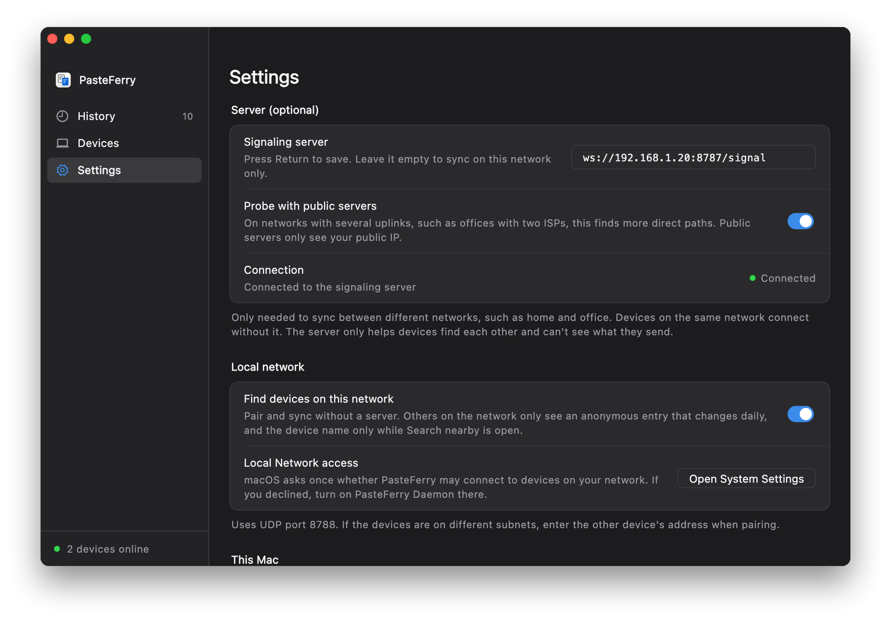

CopySync / Quick start
Quick start
Install the app, set up a server, and pair your computers. The first time takes about ten minutes; after that, copying just syncs.
Step 1
Install the app on each computer
One on every computer you want to sync. Macs and Windows PCs mix freely.
Mac
- Download CopySync.dmg, open it and drag CopySync into Applications.
- Open it from Applications.The first time, macOS says it can't verify the developer: go to System Settings → Privacy & Security and click Open Anyway near the bottom.
- Click Turn on background sync, and allow clipboard access when macOS asks.
Windows
- Run CopySync-Setup.exe; no administrator rights needed.If you see "Windows protected your PC", click More info, then Run anyway.
- Open CopySync and click Turn on background sync. After you close the window it keeps running in the notification area.

Step 2
Set up a server
Your computers find each other through it; nothing you copy is stored there. There's no public server, and there are three ways to run your own. Pick the one that fits.
Public server
- In your cloud provider's security group, open TCP 8787, UDP 3478 and UDP 32768–60999.
- Log in with ssh, download the install script and run it with the public IP:
sudo ./install.sh PUBLIC_IP. - Open
http://PUBLIC_IP:8787/healthzin a browser; ok means it's running.
Address for every computer: ws://PUBLIC_IP:8787/signal
- Best for
- Computers spread across networks that should sync from anywhere. The simplest way across networks.
- You need
- A Linux VM with a public IP, as root; the smallest one is enough.
- Keep in mind
- The VM costs money. When a direct connection fails, the relay is limited by the server's bandwidth. In mainland China, use the IP unless the domain has an ICP filing.
LAN
- Reserve an address for the server computer in your router.
- Download the server for its system and run the install script: double-click
install.cmdon Windows, run./install.shon macOS or Linux. - The script finds the computer's LAN address and prints the address for the apps.
Address for every computer: ws://LAN_ADDRESS:8787/signal, for example ws://192.168.1.20:8787/signal
- Best for
- Computers on the same Wi‑Fi or wired network, such as at home or in the office.
- You need
- An always-on Windows, Mac or Linux computer; one of the computers you sync is fine.
- Keep in mind
- No sync away from that network; it resumes when you're back. Sync also pauses while the server computer is off or asleep.
LAN + Tailscale
- Install Tailscale on each computer and sign in to the same account.
- On the server computer, run
tailscale ip -4and note the address starting with 100. - Install the server with that address, as in
install.cmd 100.101.102.103or./install.sh 100.101.102.103.
Address for every computer: ws://TAILSCALE_ADDRESS:8787/signal
- Best for
- Computers on different networks, without a public server.
- You need
- An always-on computer for the server, and Tailscale on every computer under one account.
- Keep in mind
- Every computer that runs CopySync needs Tailscale, and the one at home stays on. When Tailscale can't connect peer to peer it relays through DERP servers, which can be slow.
Step 3
Enter the server address on each computer
Open Settings
Open CopySync on each computer, including the one running the server, and go to Settings.
Enter the address
Under Signaling server, enter the address from the previous step and press Return or Enter.
Check the status
When Connection shows a green Connected, that computer is ready.

Stuck at Not connected? See the questions.
Step 4
Pair your computers
Pair each two computers once, and you're done.
- On one computer, open Devices and click Add device. It shows a 6-character code, valid for 5 minutes.
- On the other, click Add device too, switch to Enter a code and type it in.
- Both screens show the same two fingerprint lines. Check them character by character, then confirm.This stops anyone in the middle from posing as your device. Don't skip it.


Now copy something.
Copy text, an image or a file on one computer and press ⌘V or Ctrl+V on the other. Everything copied on either side is in the history.
Need help? LAN questions · Tailscale questions · Report an issue